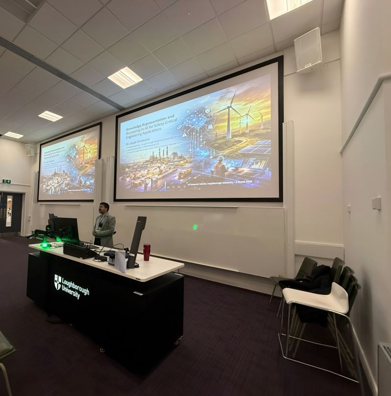

Manufacturing savings potential
Up to £300k per year demonstrated in evaluation of predictive analytics for continued process verification at Reckitt.
AI leadership / Products / Innovation
Dr. Joyjit Chatterjee
I connect AI strategy, product development and operational delivery, bringing research, people and technology together to solve enterprise challenges in R&D, manufacturing, supply chains and energy.
PhD, Computer Science · Industry practitioner · Research collaborator
United Kingdom
Research depth.
Enterprise perspective.
01 / Enterprise AI
My work spans the decisions around AI as well as the technology itself: where to invest effort, what to build, who needs to be involved and how it becomes useful.
Up to £300k per year demonstrated in evaluation of predictive analytics for continued process verification at Reckitt.
Approximately $780k and 10,000 lab hours per year demonstrated in evaluation of AI-assisted shelf-life prediction.
Contributed to waste reduction in major UK factories through data-led continuous improvement and manufacturing analytics.
Certificate of Excellence for the Reckitt–University of Hull Knowledge Transfer Partnership.
Use cases, value & feasibility
Models, experience & deployment
People, governance & operations
Teams, mentoring & knowledge
Strategy & delivery · EPAM
AI/ML consulting across R&D, manufacturing, procurement and supply for Fortune 500 and FTSE 250 organisations.
Direct client delivery at EPAM
Reckitt · Syngenta Group
Pre-sales and use-case discovery support
Qatar Airways · Unilever · Barry Callebaut · Brussels Airport Company · Cleveland Clinic Abu Dhabi · Adidas · Co-op · Currys · PPG Industries
My contribution
Connect use-case discovery and RFP responses with project planning, proof of value and governance. Help assemble delivery teams, mentor data scientists and align senior stakeholders and domain experts.
Value & outcomes
Contribute to multi-million-pound engagements across Europe and North America, including generative and agentic AI.
AI product development · Reckitt × Hull
Shelf-life prediction for healthcare products, developed through an Innovate UK Knowledge Transfer Partnership.
My contribution
Led the AI workstream across models, interfaces and deployment, collaborating with R&D scientists, engineers and UI/UX specialists. Supported uptake through leadership engagement and skills transfer.
Value & outcomes
Outstanding KTP rating for the $200k jointly funded project. Evaluation demonstrated potential annual savings of $780k and 10,000 laboratory hours.
Operations & adoption · Reckitt
Predictive and causal analytics for process verification, quality and operational planning.
Supporting a multi-billion-pound portfolio
Nurofen · Strepsils · Airborne
My contribution
Connected manufacturing, quality and process data; supported causal AI adoption across factories; developed logistics and capacity-planning tools and engaged quality and IT leadership.
Value & outcomes
Contributed to approximately 30% waste reduction in major UK factories. Predictive analytics demonstrated savings potential of up to £300k per year in evaluation.
02 / Recognition & contribution
Enterprise recognition alongside invited academic service, innovation evaluation and research with international reach.
Enterprise leadership
Finalist: Data Leader of the Year (Partner).
View details ↗Independent recognition
Manufacturing & Industry, 2022. Recognition for AI work in manufacturing and energy.
View details ↗Academic judgement
Invited expert on a Doctoral Examination (Aptitude Colloquium) committee.
View details ↗Research into impact
Distinguished Visiting Fellow, contributing to research embedding and industry impact.
View details ↗Innovation evaluation
External evaluator and reviewer for Horizon Europe’s NGI Search project, 2023.
View details ↗Sustainability research
One of 25 international awardees selected by Germany’s Federal Ministry of Education and Research in 2021.
View details ↗Business, product & leadership development
Cambridge business CPD · Oxford AI Programme · Professional Agile Leadership · AI for Product Management
03 / Watch, listen & read
Interviews, public writing and recorded talks on useful AI, responsible adoption and careers connecting research with industry.

Podcast · Low to Grow
Nov 2025
A conversation with Wenmiao Yu on explainable AI, practical enterprise adoption and reflective leadership.
Listen to the episode ↗
Recorded talk · Hull / Alan Turing Institute
Recording published Dec 2024
Sharing my career journey and perspective on working in data science and AI, at the University of Hull.
Watch the talk ↗Recorded presentation · IEA Wind Task 43
Jun 2025
Automated question-answering for operations and maintenance, presented at the Task 43 annual meeting.
Watch the presentation ↗Interview · IEEE Spectrum
Jun 2022
Contributing a research perspective on trust, data and the practical use of AI in renewable energy.
Read the interview ↗Coauthored perspective · World Economic Forum
Apr 2022
With Nina Dethlefs, on the unequal global adoption of AI. Originally published by The Conversation and republished by the World Economic Forum.
Read the article ↗Profile · Education Times
Jul 2021
A profile of my research in applying AI to energy and climate challenges.
Read the profile ↗04 / Research & authorship

Co-editor with Nina Dethlefs · Wiley · 2025
Challenge-driven Solutions
Bringing academic and industry perspectives together on AI for the energy transition. I co-edited the volume and coauthored its opening chapter on operational, engineering and socioeconomic adoption challenges.
Explore the book at Wiley ↗conference · Oct 2026
GLOW workshop at ISWC, Bari, Italy
View workshop programme ↗conference · May 2026
ABIS workshop at ACM Web Science 2026; ACM Web Science Conference Companion
Read publication ↗05 / Speaking & exchange
Sharing research and taking part in conversations across industry, universities and public forums.

In the room · 25 Oct 2026
Presenting research on a graph-grounded multimodal agent for trustworthy power-line operations and maintenance at the GLOW workshop, ISWC 2026, Bari.
View the Bluesky post ↗
In the room · Mar 2026
A guest lecture at Loughborough University on knowledge representation and reasoning for safety-critical engineering.
View the LinkedIn post ↗
In the room · 19 Oct 2026
An invited guest at a House of Lords evidence session on the legal and ethical frameworks for autonomous vehicle technology.
View the Bluesky post ↗
In the room · Nov 2025
An invited talk for Queen Mary University of London on generative AI, knowledge graphs and Wind Task 43, at the London City Institute of Technology campus.
View the Bluesky post ↗06 / Open research
Public research resources
A domain knowledge graph and supporting resources for explainable decisions in wind turbine operations and maintenance.
Public research resources
Question–query datasets, templates and graph resources accompanying research on interactive maintenance decision support.